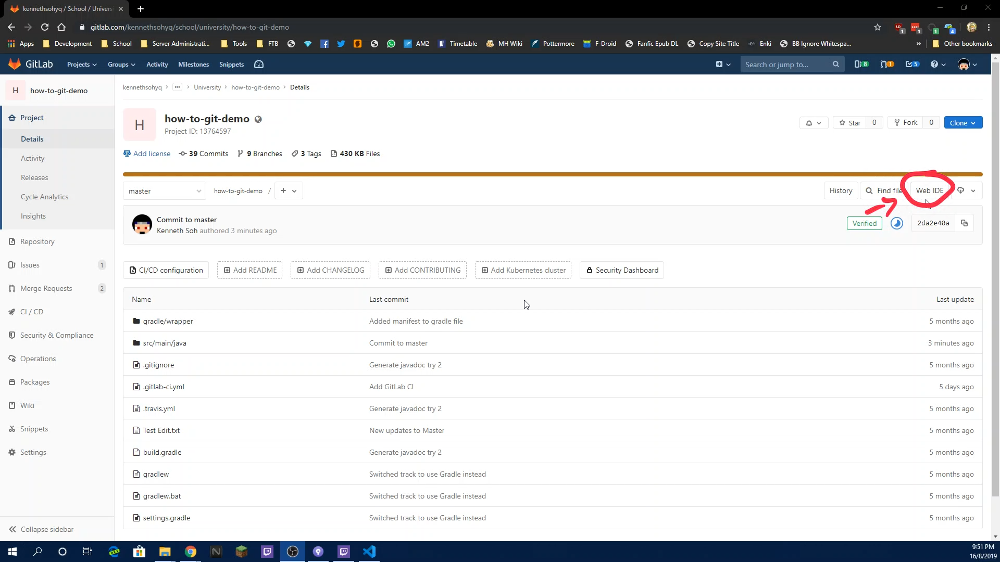
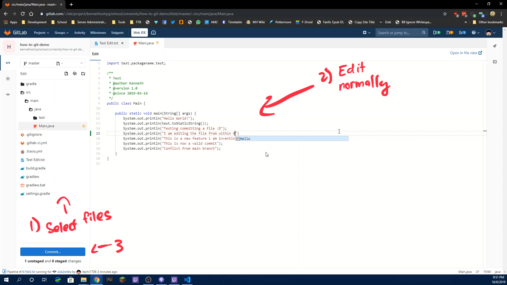
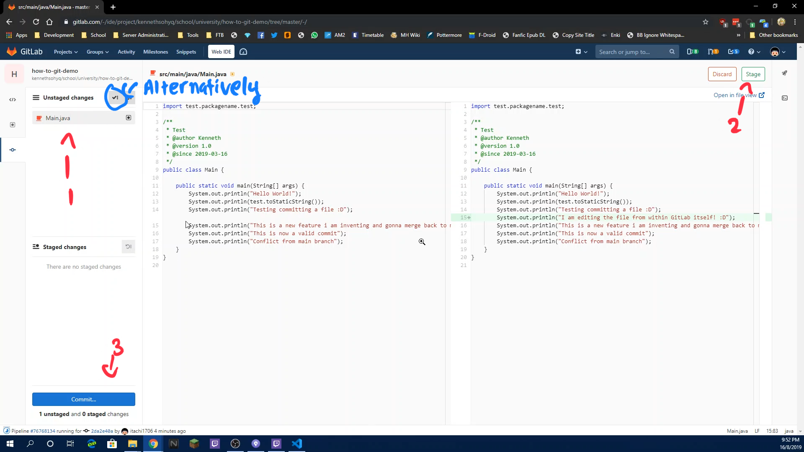
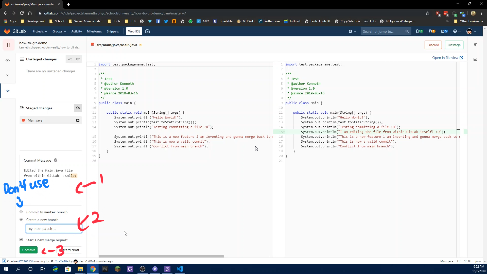

There are some occasions where you urgently needs to modify multiple documents, however you are not anywhere near a proper IDE. Don't worry as GitLab
has you covered by implementing a web-based IDE directly into their website. This guide will show you the general flow of using the Web IDE feature
Click on the "Web IDE" button

Select the files you need to modify and edit them from the browser directly
When you are done, click on the "Commit" button to enter the "Review" stage

In this stage, review all of your changes per file to ensure that they are correct and stage/discard them accordingly Alternatively, you can use the "Stage All" button to stage all unstaged files
When you are done reviewing, click the "Commit" button again

Enter the commit message for these changes you have done
Afterwards select the "Create a new branch" option and enter your branch name for this change, checking the "Start a new merge request" button so that GitLab
will automatically move you to the "Create MR page" NOTE: Do not use the "Commit to MASTER branch" option as it will be protected from modification and your commits WILL fail
Click the Green "Commit" button for the final time and commit your changes into your branch with the Merge Request! For more information on creating a MR head over to Creating a feature and Merge Request for more information

Demo Video The following is a video on how this is being done. Read the how-to guide before watching the video for actual steps to do it